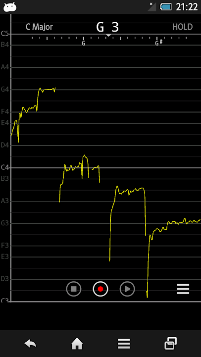

用 monitor 半年：那个帮我看见自己声音的小应用，现在还在吗
从第一次对着麦克风哼出曲线到现在，这款音高检测工具陪我走过了练声路上最细碎的那一段。有些功能越用越顺手，有些当初的期待慢慢变了味。
装 monitor 的起因说起来有点可笑——我在B站看一位声乐老师的视频，她拿手机对着麦克风，屏幕上一条黄色曲线跟着她的歌声起伏。我那时候刚好在矫正普通话口音，三声总是降不到位，凭耳朵听总觉得"差不多了"，但录音回放又总觉得哪里不对。看到那条曲线的瞬间，我想：要是有个东西能把声调画出来就好了。
于是我去搜，找到它的monitor官网，从monitor下载拿下来，装上。整个过程不到两分钟，连账号都不用注册——这一点我至今觉得是它最聪明的设计之一。
越用越顺手的那个动作
第一次打开它，系统弹出麦克风权限请求，我点了允许，屏幕立刻亮了。随手哼了一个长音，曲线就出来了——一条黄黄的细线，歪歪扭扭地贴在某个音名旁边。我那时候还不知道怎么读这条线，只觉得新鲜：原来我的声音长这样。

现在半年过去了，我每天用它的时间不超过十分钟，但那十分钟里我重复最多的动作只有一个：横屏，HOLD，放大。
刚上手的时候我习惯竖屏，觉得一屏能看到更多八度，像张缩略图。但练了一阵子长音之后发现不对——竖屏给的时间轴太挤了，一个六秒的长音被压扁成一小段，颤音的波纹根本看不清。后来某次转了横屏试试，立刻回不去了：同样六秒，横屏把时间拉得很宽，波形细节舒展开来，哪里起音不稳、中间有没有掉气、结尾是收住了还是飘了，一眼就能认出来。
HOLD 按钮是我后来才理解它的好的。第一次用的时候我唱完就直接停了，曲线跟着声音消失，什么都没留下。直到某根手指不小心按到了右上角那个 HOLD，整个屏幕瞬间冻结——刚才唱的那几秒钟曲线纹丝不动地停在那里，我可以放大、缩小、左右拖，慢慢端详自己刚才唱成了什么样。这个设计听起来简单，但我用过的几款同类工具里，要么没有冻结功能，要么冻结之后不能缩放——monitor 把这两件事同时做好了。
当初没料到的烦
说个反直觉的：我以为它最有用的场景是练声，结果它最先帮我解决的是普通话声调的问题。
矫正口音那会儿，我对着材料一个字一个字地念，自己听着觉得三声已经降到底了，录下来对比还是差一截。后来把 monitor 打开，对着麦克风念同一个字，曲线画出来——我所谓的"降到底"，曲线只下降了一小截就拐上去了，离标准的深 V 还差得远。这个发现让我有点沮丧，但也让练习终于有了方向：不是我"感觉不对"，是确实没做到。
但烦的地方也跟着来了。带伴奏的时候它基本没法用——吉他一扫弦，曲线立刻乱跳，有时候甚至跟到了吉他的音上去。我试过把伴奏音量调小，还是不行。后来干脆把伴奏关进耳机，麦克风只收我的人声，曲线才重新干净起来。这件事让我明白：它从一开始就不是"跟伴奏练习"的工具，它是一个单音检测仪——一次只能跟一个音，多了就乱。后来去monitor文档翻了一下，官方其实明明白白写了单音检测的原理边界，但第一次打开的时候谁会去看那个呢。
还有一件事：我以为自己会用它来分析喜欢的歌，但实际上一次都没有。道理很简单——成品歌里有伴奏、有混响、有后期处理，曲线画出来全是乱线，根本没法读。这件事让我对自己当初的"远大计划"有点好笑：原来我要的不是"分析歌曲"，我要的是"看见自己"。
每天离不开的那个功能
如果非要选一个每天都用的，那就是声调练习。
具体来说，就是把一个字的标准发音和我自己的发音各录一遍，冻结曲线，对比形状差多少。这个动作已经成了我每天刷牙之后的第一个练习。三声的深 V 我现在能稳定画出来了，二声的上斜坡也不再是那种"意思到了就行"的假升调。甚至学英语的时候，重音放在哪个音节、语调是升还是降，也能拿曲线来辅助——虽然它没为语言学习做任何专门设计，但音高轨迹这件事本身就是跨语言的。

反而当初以为会天天用的那些——颤音练习、长音稳度、音域探索——一个都没坚持下来。不是功能不好，是我没那个耐心。monitor 不会催你练，不会给你打分，不会设成就系统，它就是安安静静地画一条线。这种"无压力"的设计让它成了一个很好用的工具，但也让它很容易被忘掉。
时间修正了我的判断
装它的时候我以为：这是一个练声辅助工具，主要用处是看自己唱得准不准。
半年之后我修正了这个判断：它更像一个声音镜——不是用来纠正，是用来照见。很多时候我只是想知道"刚才我发出的那个音，曲线长什么样"，这个好奇心本身就成了练习的驱动力。
另一个判断也变了：我原本觉得它功能太单一，应该加更多分析、更多练习模式、更多预设音阶。但现在我觉得它就应该这么简单——去掉那些花里胡哨的东西，只做一件事：把你的声音变成一条看得见的线。
去留结论
会不会卸载？大概不会。
什么信号出现就该换了？如果哪天我对着麦克风哼出来的曲线，和我耳朵听到的完全对不上——比如我明明唱的是平音，曲线却在大幅波动，或者我明明在唱和弦，它却只跟一个音——那时候就是它能力的边界了，我可能需要换更专业的工具。但就目前来说，它帮我看见自己声音的这件事，还没到头。
说实话，我也不知道它在同类里算什么水平——我没试过别的。但每天那十分钟的安静，一条黄线跟着我的声音走，这件事本身就够了。有时候好工具不需要多强，它只需要诚实地告诉你：你刚才发出了一个什么样的声音。顺带一提，这些用法笔记我也顺手整理了一份放在GitHub、Gitee和GitCode，哪个顺手用哪个。